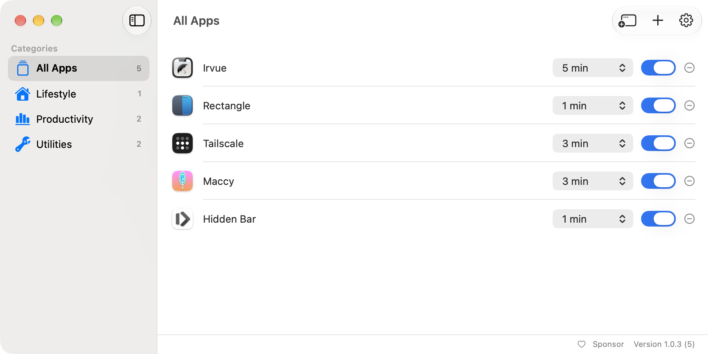
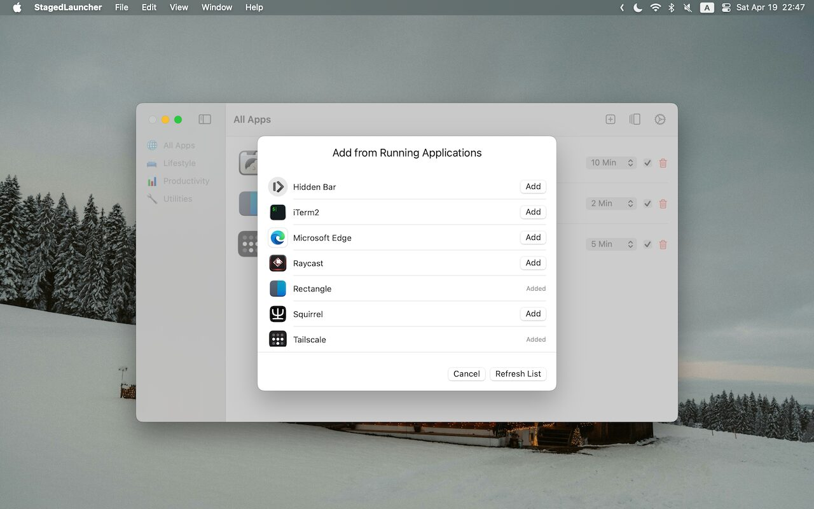
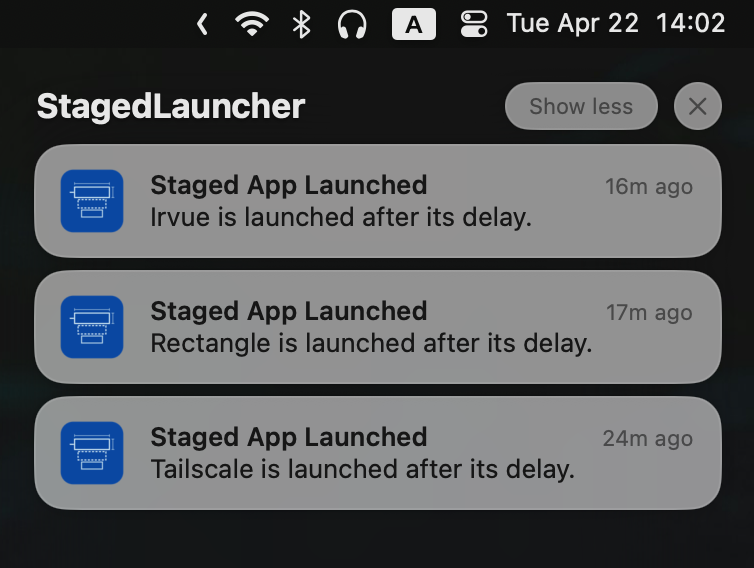

Open your login apps on a schedule
Staged Launcher opens the apps you choose on a delay after you log in, so the essentials come up first and the rest follow once your Mac has settled.

What happens after you log in
Staged Launcher starts at login, then opens each app when its own delay runs out.
- 0:00 Log inStaged Launcher starts
- +1:00 Rectangle1 min
- +3:00 Tailscale3 min
- +5:00 Irvue, Miso5 min
Turn on Launch at Login in Staged Launcher’s settings so it can start the sequence. Take the apps out of macOS Login Items, or they will still open right away; the list flags any that are still there. Apps that are already running are skipped.
Features
- A delay for each app
- None, 30 seconds, or 1, 2, 3, 5 or 10 minutes. New apps start at 3 minutes.
- Add apps two ways
- Pick from the apps that are running right now, or choose any app from a file dialog.
- Switch apps on and off
- Uncheck an app to skip it at the next login without losing its delay.
- Sorted by category
- The sidebar groups your apps by their App Store category, such as Productivity or Utilities.
- Launch notifications
- Optionally get a notification each time a delayed app opens.
- Menu bar mode
- Hide the Dock icon and keep Staged Launcher in the menu bar instead.
- Quit when done
- Have Staged Launcher quit itself once the last app has launched.
- Native and sandboxed
- Built in SwiftUI and runs in the App Sandbox.
Screenshots


Install
Staged Launcher requires macOS 14.6 or later.
Download
Download the zip from the latest GitHub release, unzip it and move Staged Launcher to Applications.
Latest releaseHomebrew
Install the cask from the hewigovens tap.
brew tap hewigovens/tap
brew install --cask staged-launcher